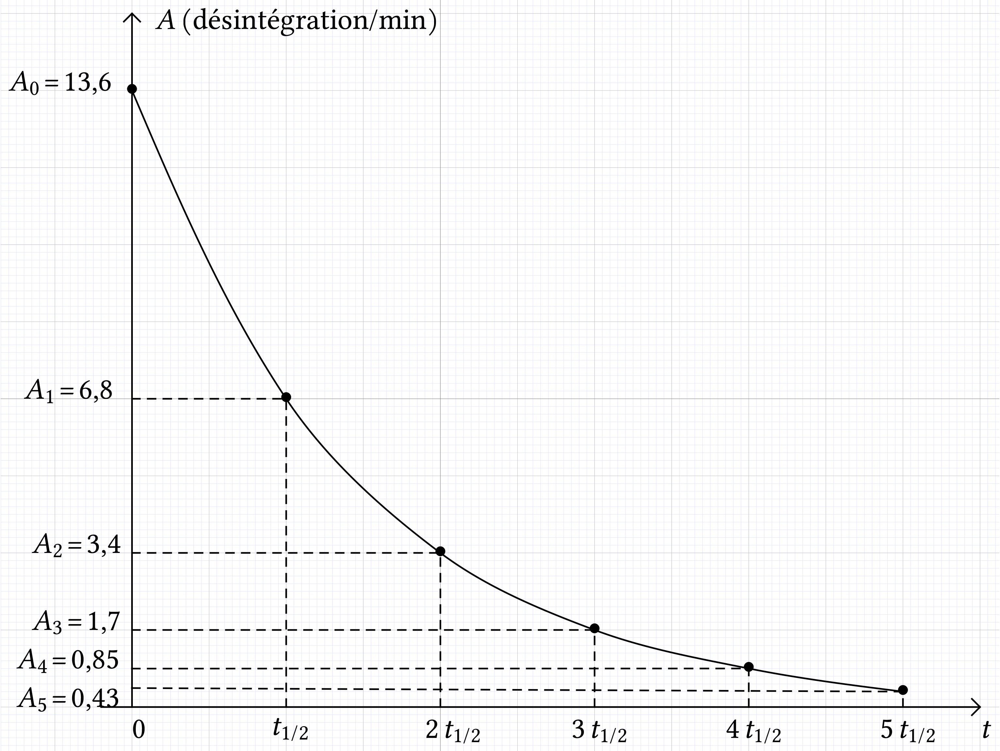

-
À l'instant initial
A.N. .
-
Après une année, sachant que
A.N. .
Cette valeur n'a pas de sens car elle est inférieure à 1 ! Elle indique simplement qu'au bout d'une année, il n'y a plus de noyaux radioactifs dans cet échantillon.
|
L'iode est utilisé en médecine
nucléaire. Sa demi-vie est de 8,1 jours.
À l'instant
, l'activité d'un
échantillon est égale à . Donner une estimation du nombre d'atomes
radioactifs présents à cet instant puis après une
année. Conclure.
À l'instant initial
A.N. .
Après une année, sachant que
A.N. .
Cette valeur n'a pas de sens car elle est inférieure à 1 ! Elle indique simplement qu'au bout d'une année, il n'y a plus de noyaux radioactifs dans cet échantillon.
Des fragments d'os et de charbon de bois d'un foyer sont prélevés dans un site préhistorique. On mesure l'activité du carbone 14 () des résidus d'os et de charbon, afin de déterminer l'âge de ces fragments.
Le carbone 14 est produit constamment dans l'atmosphère suite au
bombardement de l'azote par les neutrons
créés dans la haute atmosphère par les rayons
cosmiques. Les plantes assimilent aussi bien l'isotope
que . Les abondances
respectives de ces deux isotopes sont donc les mêmes dans les
composés carbonés de l'atmosphère () et les êtres vivants. À la mort
de ces derniers, il n'y a plus d'assimilation ; le carbone 14 radioactif
se désintègre.
Le carbone 14 a une demi-vie
radioactive égale à 5 568 ans.
La mesure de l'activité du carbone 14 contenu dans les fragments d'os anciens donne 110 désintégrations par heure et par gramme de carbone. L'échantillon de référence donne une activité de 13,6 désintégrations par minute et par gramme de carbone.
La demi-vie radioactive d'un noyau radioactif est la durée au bout de laquelle l'activité d'un échantillon constitué de cet isotope est divisée par deux.
 en fonction du temps (en nombre de
désintégrations par minute et par gramme de carbone).
en fonction du temps (en nombre de
désintégrations par minute et par gramme de carbone).
Comment tracer le diagramme alors que l'on n'a pas la loi de décroissance du nombre de noyaux ou celle donnant l'évolution de l'activité ? Appliquer la définition de l'activité. Ainsi, , , ...

D'après l'énoncé,  .
Par lecture graphique, on peut en déduire que l'âge de
l'échantillon est .
.
Par lecture graphique, on peut en déduire que l'âge de
l'échantillon est .
 de
l'échantillon, exprimé en année, peut être
calculé par la relation .
de
l'échantillon, exprimé en année, peut être
calculé par la relation .
Puisque
et
on peut en déduire que
ou
Si on applique la fonction logarithme népérien à chaque terme de l'égalité, on obtient

ou
A.N.  .
On retrouve bien une valeur comparable à celle
déterminée graphiquement.
.
On retrouve bien une valeur comparable à celle
déterminée graphiquement.

Le bismuth est radioactif ; c'est un
émetteur de demi-vie radioactive . Cette émission est
accompagnée de l'émission d'un rayonnement  .
.
 , avec ; ;
.
, avec ; ;
.
 .
.

A.N. .
Une source produit désintégrations
en  .
.
A.N. .
et
donc
Finalement
A.N. .
A.N.  .
La masse de l'échantillon est égale à
.
La masse de l'échantillon est égale à  .
.
Le nombre de noyaux d'hélium créé chaque seconde est égal au nombre de noyaux de bismuth qui disparaît. Comme l'hélium est un gaz monoatomique, dans le modèle du gaz parfait,
A.N.  .
.
La définition de la demi-vie radioactive est telle que
, donc .
 , donc .
, donc .
, donc . Le nombre de désintégrations est inférieur à 1 chaque seconde ! On peut en conclure que l'échantillon n'est plus radioactif.

Le cobalt contenu dans les bombes au cobalt
utilisées en médecine est obtenu par le bombardement de
cobalt 59 (isotope stable) par des neutrons. Le cobalt 60 est radioactif
. Sa constante radioactive
vaut . Le noyau fils, un des
isotopes de l'élément se
désexcite en donnant deux rayonnements de longueur d'onde , puis .
Lors d'une désintégration la
particule émise est un électron.
Lors de la désexcitation des photons
sont émis (on peut aussi dire ondes
électromagnétiques de longueur d'onde située
dans le domaine du spectre).
On parle de radioactivité artificielle car l'isotope
radioactif, le cobalt 60 est le résultat d'une
réaction nucléaire provoquée, la
réaction entre le cobalt 59 stable et un neutron.
Il ne
faut pas laisser penser que la radioactivité d'un noyau
radioactif puisse être provoquée,
contrôlée.
On a montré dans le cours que
A.N. .
Les particules sont émises avec une
énergie cinétique de .
Ces particules sont absorbées dans les tissus humains.
La puissance transférée est l'énergie transférée en une seconde. Puisqu'un électron est libéré chaque fois qu'un noyau de cobalt disparaît,
A.N. . Cette valeur est très importante !
Ce type de radioactivité ne s'observe généralement
qu'avec des éléments artificiels. Les noyaux fils sont
obtenus à l'état excité. Il y a alors
émission de rayonnements très
énergétiques.
Le brome est un émetteur . Sa demi-vie radioactive est de 57 h. Il est
utilisé en imagerie médicale. Le noyau-fils est un isotope
de l'élément sélénium (Se); il peut
émettre un rayonnement .
.
On a montré que
A.N.  .
.
Un échantillon a une activité initiale de  .
.
et
donc
Finalement
A.N. .
La puissance fournie est l'énergie fournie en une seconde. Puisqu'un positron est libéré chaque fois qu'un noyau de brome disparaît,
A.N. .
.
Écrire la réaction d'annihilation
électron-positron.